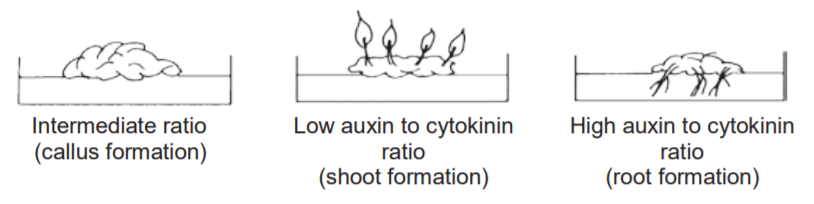

Introduction
Similarly to animal hormones, plant hormones are chemical substances with a profound role in growth, development, reproduction, and environmental responses (credit: pandorax guide).
Auxin
We can begin with auxin. Auxin is the primary substance responsible for phototropism, apical dominance, and shoot elongation.
- The main form of auxin is indoleic acid
- Auxins are produced in the shoot tip and transported down towards the base via polar transport
- Increased acidity in plant cell walls is responsible for acid growth hypothesis- recall that auxin's main form is indoleic acid
- Expansins break hydrogen bonds and loosen the cell wall
- Also plays a role in determination of phyllotaxy
Gibberelin
In the early 20th century, farmers found that some rice plants were growing incredibly fast and dying before reaching maturity. It was later found that a fungus called Gibberella caused this “foolish seedling disease,” secreting chem- icals that scientists termed gibberellins.
Cytokinin
